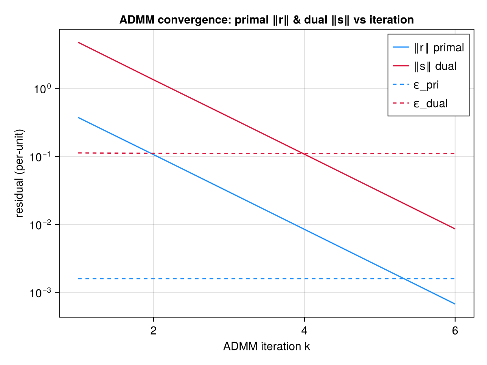

Rung 5 — ADMM Decomposition & Convergence
This page is the EXP-03 literate proof for the operational decomposition seam (ADMM-01/ADMM-03/ADMM-04): it executes the real solve_admm hand-rolled dual-ascent loop end-to-end during the Documenter build, on the SAME scenario also solved centrally by solve_welfare, so the ADMM-vs-centralized cross- validation displayed below is a genuinely solved comparison — never a hardcoded number (mirrors the toy_dc.jl reproducibility-proof pattern, threat T-01-09).
The 2-block ADMM split (thesis 3.46/3.47)
solve_admm decomposes the monolithic GLB-CVX social-welfare problem (solve_welfare) into a per-node AGR-OPT block and a whole-network DSO-OPT block, coupled through a shared price:
\[\text{AGR-OPT}_j:\quad \max_{p_{\text{ag}_j}}\; U_{\text{ag}_j}\bigl(p_{\text{ag}_j}\bigr) \;-\;\lambda_j^\top p_{\text{ag}_j} \;-\; \tfrac{\rho}{2}\bigl\lVert p_{\text{ag}_j} - c_j\bigr\rVert_2^2 \qquad \text{(3.46)}\]
\[\text{DSO-OPT}:\quad \max_{p_{\text{dso}}}\; -\lambda_0^\top p_{\text{import}} \;+\;\sum_j\Bigl(\lambda_j^\top p_{\text{dso},j} \;-\; \tfrac{\rho}{2}\bigl\lVert p_{\text{dso},j} - a_j\bigr\rVert_2^2\Bigr) \qquad \text{(3.47)}\]
The two blocks are reconciled by a dual-ascent update on the shared coupling price at every iteration k:
\[\lambda_j[t] \;\leftarrow\; \lambda_j[t] \;+\; \rho\, R_{p,j}[t], \qquad R_{p,j} = p_{\text{ag}_j} - p_{\text{dso},j} \qquad \text{(primal residual)}\]
so λ_j converges to the SAME nodal price extract_dlmp reports from the centralized solve — the load-bearing ADMM-04 cross-validation this page performs.
Build once, re-solve many (ADMM-03/ADMM-04)
The practical payoff of this split is NOT solving a smaller problem — it is that both the AGR-OPT and DSO-OPT JuMP models are constructed once, outside the iteration loop, and every subsequent iteration only mutates their linear objective coefficients (−λ_j − ρ·c_j, −λ_j − ρ·a_j) and re-solves. No Model(...) call ever appears inside solve_admm's loop body, so num_variables/num_constraints on each subproblem are iteration-count-independent — the idiomatic "build once, re-solve many" discipline CLAUDE.md requires for any ADMM/Benders outer loop.
using TSODSO
using TSODSO: Bus, Branch, FeederBuilding a small radial feeder with two aggregators
The SAME 3-bus radial shape used on the pricing page (root + two downstream load buses, one PVBattery aggregator per load bus) — solve_admm assumes a 1:1 node↔aggregator coupling (the Phase-6 scope), which this feeder already satisfies. T = 4 keeps the doc build fast while still exercising a real multi-iteration dual-ascent trajectory.
buses = [Bus(1, 0.95, 1.05, true), Bus(2, 0.95, 1.05, false), Bus(3, 0.95, 1.05, false)]
branches = [Branch(1, 2, 0.01, 0.02, 10.0), Branch(2, 3, 0.01, 0.02, 10.0)]
feeder = Feeder(buses, branches, 1)
T = 4
batt2 = PVBattery(2, 0.95, 1.0, 0.5, 0.0, 2.0, 1.0, 1.0, 2.0, 3.0, fill(0.2, T))
agg2 = Aggregator(2, 0.9, [batt2], fill(0.1, T))
batt3 = PVBattery(3, 0.95, 1.0, 0.5, 0.0, 2.0, 1.0, 1.0, 2.0, 3.0, fill(0.3, T))
agg3 = Aggregator(3, 0.9, [batt3], fill(0.2, T))
λ₀ = fill(40.0, T)4-element Vector{Float64}:
40.0
40.0
40.0
40.0Solving the SAME scenario twice — centralized ground truth, then decomposed
solve_welfare on the monolithic ConvexBranchFlow SOCP is the centralized ground truth. solve_admm decomposes the IDENTICAL feeder/aggregators/λ₀ via the hand-rolled 2-block dual-ascent loop above; allow_export = true on both keeps the SOC relaxation exact (PF-04), the enabler for trustworthy recovered duals in either solve path.
ctx_c, obj_c, dadp_c = solve_welfare(
feeder,
ConvexBranchFlow(),
[agg2, agg3];
T = T,
λ₀ = λ₀,
allow_export = true,
)
admm = solve_admm(
feeder,
ConvexBranchFlow(),
[agg2, agg3];
T = T,
λ₀ = λ₀,
ρ = 5.0,
allow_export = true,
)(welfare = 139.24563615614272, dadp = [39.34939043175695 39.3493904276578 39.349390418381006 39.0736562437145; 39.026117501625784 39.026117495592274 39.02611748141804 38.61635036790921], λ = [39.34939043175695 39.3493904276578 39.349390418381006 39.0736562437145; 39.026117501625784 39.026117495592274 39.02611748141804 38.61635036790921], iters = 6, residuals = AdmmResiduals(3, 4, [0.37668786369991347, 0.10707624452905036, 0.030264050153286516, 0.00853906629599834, 0.002408406181939431, 0.0006792849229715874], [4.797889331638961, 1.3485452418598491, 0.38407284701052447, 0.10862724995576137, 0.03065395408251907, 0.008645789656350152], [5.0, 5.0, 5.0, 5.0, 5.0, 5.0], [0.0016101206285945699, 0.0016101206285928536, 0.0016101206285921916, 0.0016101206285920194, 0.00161012062859198, 0.0016101206285919715], [0.11341992770232222, 0.11159546676436287, 0.1110804028336447, 0.11093487496518686, 0.11089377242384732, 0.11088216571388487], [1.8834393184995672, 0.5353812226452518, 0.15132025076643257, 0.0426953314799917, 0.012042030909697155, 0.0033964246148579375], 6), dso_ctx = ModelContext(A JuMP Model
├ solver: Clarabel
├ objective_sense: MIN_SENSE
│ └ objective_function_type: JuMP.QuadExpr
├ num_variables: 64
├ num_constraints: 104
│ ├ JuMP.AffExpr in MOI.EqualTo{Float64}: 40
│ ├ Vector{JuMP.AffExpr} in MOI.SecondOrderCone: 8
│ ├ Vector{JuMP.AffExpr} in MOI.RotatedSecondOrderCone: 8
│ ├ JuMP.VariableRef in MOI.EqualTo{Float64}: 8
│ ├ JuMP.VariableRef in MOI.GreaterThan{Float64}: 24
│ └ JuMP.VariableRef in MOI.LessThan{Float64}: 16
└ Names registered in the model
└ :P, :Q, :balance_p, :balance_q, :cone, :cpydrop, :l, :p_import, :pag_dso, :q_import, :smax, :v, :vdrop, :v̂, Dict{Symbol, Any}(:smax => [1, 1] = smax[1,1] : [10, P[1,1], Q[1,1]] ∈ MathOptInterface.SecondOrderCone(3)
[1, 2] = smax[1,2] : [10, P[1,2], Q[1,2]] ∈ MathOptInterface.SecondOrderCone(3)
[1, 3] = smax[1,3] : [10, P[1,3], Q[1,3]] ∈ MathOptInterface.SecondOrderCone(3)
[1, 4] = smax[1,4] : [10, P[1,4], Q[1,4]] ∈ MathOptInterface.SecondOrderCone(3)
[2, 1] = smax[2,1] : [10, P[2,1], Q[2,1]] ∈ MathOptInterface.SecondOrderCone(3)
[2, 2] = smax[2,2] : [10, P[2,2], Q[2,2]] ∈ MathOptInterface.SecondOrderCone(3)
[2, 3] = smax[2,3] : [10, P[2,3], Q[2,3]] ∈ MathOptInterface.SecondOrderCone(3)
[2, 4] = smax[2,4] : [10, P[2,4], Q[2,4]] ∈ MathOptInterface.SecondOrderCone(3), :vdrop => JuMP.ConstraintRef{JuMP.Model, MathOptInterface.ConstraintIndex{MathOptInterface.ScalarAffineFunction{Float64}, MathOptInterface.EqualTo{Float64}}, JuMP.ScalarShape}[vdrop[1,1] : -v[1,1] + v[2,1] + 0.02 P[1,1] + 0.04 Q[1,1] - 0.0005 l[1,1] = 0 vdrop[1,2] : -v[1,2] + v[2,2] + 0.02 P[1,2] + 0.04 Q[1,2] - 0.0005 l[1,2] = 0 vdrop[1,3] : -v[1,3] + v[2,3] + 0.02 P[1,3] + 0.04 Q[1,3] - 0.0005 l[1,3] = 0 vdrop[1,4] : -v[1,4] + v[2,4] + 0.02 P[1,4] + 0.04 Q[1,4] - 0.0005 l[1,4] = 0; vdrop[2,1] : -v[2,1] + v[3,1] + 0.02 P[2,1] + 0.04 Q[2,1] - 0.0005 l[2,1] = 0 vdrop[2,2] : -v[2,2] + v[3,2] + 0.02 P[2,2] + 0.04 Q[2,2] - 0.0005 l[2,2] = 0 vdrop[2,3] : -v[2,3] + v[3,3] + 0.02 P[2,3] + 0.04 Q[2,3] - 0.0005 l[2,3] = 0 vdrop[2,4] : -v[2,4] + v[3,4] + 0.02 P[2,4] + 0.04 Q[2,4] - 0.0005 l[2,4] = 0], :cone => JuMP.ConstraintRef{JuMP.Model, MathOptInterface.ConstraintIndex{MathOptInterface.VectorAffineFunction{Float64}, MathOptInterface.RotatedSecondOrderCone}, JuMP.VectorShape}[cone[1,1] : [0.5 l[1,1], v[1,1], P[1,1], Q[1,1]] ∈ MathOptInterface.RotatedSecondOrderCone(4) cone[1,2] : [0.5 l[1,2], v[1,2], P[1,2], Q[1,2]] ∈ MathOptInterface.RotatedSecondOrderCone(4) cone[1,3] : [0.5 l[1,3], v[1,3], P[1,3], Q[1,3]] ∈ MathOptInterface.RotatedSecondOrderCone(4) cone[1,4] : [0.5 l[1,4], v[1,4], P[1,4], Q[1,4]] ∈ MathOptInterface.RotatedSecondOrderCone(4); cone[2,1] : [0.5 l[2,1], v[2,1], P[2,1], Q[2,1]] ∈ MathOptInterface.RotatedSecondOrderCone(4) cone[2,2] : [0.5 l[2,2], v[2,2], P[2,2], Q[2,2]] ∈ MathOptInterface.RotatedSecondOrderCone(4) cone[2,3] : [0.5 l[2,3], v[2,3], P[2,3], Q[2,3]] ∈ MathOptInterface.RotatedSecondOrderCone(4) cone[2,4] : [0.5 l[2,4], v[2,4], P[2,4], Q[2,4]] ∈ MathOptInterface.RotatedSecondOrderCone(4)], :cpydrop => JuMP.ConstraintRef{JuMP.Model, MathOptInterface.ConstraintIndex{MathOptInterface.ScalarAffineFunction{Float64}, MathOptInterface.EqualTo{Float64}}, JuMP.ScalarShape}[cpydrop[1,1] : -v̂[1,1] + v̂[2,1] + 0.02 P[1,1] + 0.04 Q[1,1] + 0.001 l[1,1] = 0 cpydrop[1,2] : -v̂[1,2] + v̂[2,2] + 0.02 P[1,2] + 0.04 Q[1,2] + 0.001 l[1,2] = 0 cpydrop[1,3] : -v̂[1,3] + v̂[2,3] + 0.02 P[1,3] + 0.04 Q[1,3] + 0.001 l[1,3] = 0 cpydrop[1,4] : -v̂[1,4] + v̂[2,4] + 0.02 P[1,4] + 0.04 Q[1,4] + 0.001 l[1,4] = 0; cpydrop[2,1] : -v̂[2,1] + v̂[3,1] + 0.02 P[2,1] + 0.04 Q[2,1] + 0.001 l[2,1] = 0 cpydrop[2,2] : -v̂[2,2] + v̂[3,2] + 0.02 P[2,2] + 0.04 Q[2,2] + 0.001 l[2,2] = 0 cpydrop[2,3] : -v̂[2,3] + v̂[3,3] + 0.02 P[2,3] + 0.04 Q[2,3] + 0.001 l[2,3] = 0 cpydrop[2,4] : -v̂[2,4] + v̂[3,4] + 0.02 P[2,4] + 0.04 Q[2,4] + 0.001 l[2,4] = 0], :balance_p => JuMP.ConstraintRef{JuMP.Model, MathOptInterface.ConstraintIndex{MathOptInterface.ScalarAffineFunction{Float64}, MathOptInterface.EqualTo{Float64}}, JuMP.ScalarShape}[balance_p[1,1] : -P[1,1] + p_import[1] = 0 balance_p[1,2] : -P[1,2] + p_import[2] = 0 balance_p[1,3] : -P[1,3] + p_import[3] = 0 balance_p[1,4] : -P[1,4] + p_import[4] = 0; balance_p[2,1] : P[1,1] - P[2,1] - 0.01 l[1,1] + pag_dso[2,1] = 0 balance_p[2,2] : P[1,2] - P[2,2] - 0.01 l[1,2] + pag_dso[2,2] = 0 balance_p[2,3] : P[1,3] - P[2,3] - 0.01 l[1,3] + pag_dso[2,3] = 0 balance_p[2,4] : P[1,4] - P[2,4] - 0.01 l[1,4] + pag_dso[2,4] = 0; balance_p[3,1] : P[2,1] - 0.01 l[2,1] + pag_dso[3,1] = 0 balance_p[3,2] : P[2,2] - 0.01 l[2,2] + pag_dso[3,2] = 0 balance_p[3,3] : P[2,3] - 0.01 l[2,3] + pag_dso[3,3] = 0 balance_p[3,4] : P[2,4] - 0.01 l[2,4] + pag_dso[3,4] = 0], :balance_q => JuMP.ConstraintRef{JuMP.Model, MathOptInterface.ConstraintIndex{MathOptInterface.ScalarAffineFunction{Float64}, MathOptInterface.EqualTo{Float64}}, JuMP.ScalarShape}[balance_q[1,1] : -Q[1,1] + q_import[1] = 0 balance_q[1,2] : -Q[1,2] + q_import[2] = 0 balance_q[1,3] : -Q[1,3] + q_import[3] = 0 balance_q[1,4] : -Q[1,4] + q_import[4] = 0; balance_q[2,1] : Q[1,1] - Q[2,1] - 0.02 l[1,1] = 0.04843221048378526 balance_q[2,2] : Q[1,2] - Q[2,2] - 0.02 l[1,2] = 0.04843221048378526 balance_q[2,3] : Q[1,3] - Q[2,3] - 0.02 l[1,3] = 0.04843221048378526 balance_q[2,4] : Q[1,4] - Q[2,4] - 0.02 l[1,4] = 0.04843221048378526; balance_q[3,1] : Q[2,1] - 0.02 l[2,1] = 0.09686442096757052 balance_q[3,2] : Q[2,2] - 0.02 l[2,2] = 0.09686442096757052 balance_q[3,3] : Q[2,3] - 0.02 l[2,3] = 0.09686442096757052 balance_q[3,4] : Q[2,4] - 0.02 l[2,4] = 0.09686442096757052]), Dict{Symbol, Any}(:Rp => JuMP.AffExpr[-P[1,1] + p_import[1] -P[1,2] + p_import[2] -P[1,3] + p_import[3] -P[1,4] + p_import[4]; P[1,1] - 0.01 l[1,1] - P[2,1] + pag_dso[2,1] P[1,2] - 0.01 l[1,2] - P[2,2] + pag_dso[2,2] P[1,3] - 0.01 l[1,3] - P[2,3] + pag_dso[2,3] P[1,4] - 0.01 l[1,4] - P[2,4] + pag_dso[2,4]; P[2,1] - 0.01 l[2,1] + pag_dso[3,1] P[2,2] - 0.01 l[2,2] + pag_dso[3,2] P[2,3] - 0.01 l[2,3] + pag_dso[3,3] P[2,4] - 0.01 l[2,4] + pag_dso[3,4]], :Rq => JuMP.AffExpr[-Q[1,1] + q_import[1] -Q[1,2] + q_import[2] -Q[1,3] + q_import[3] -Q[1,4] + q_import[4]; Q[1,1] - 0.02 l[1,1] - Q[2,1] - 0.04843221048378526 Q[1,2] - 0.02 l[1,2] - Q[2,2] - 0.04843221048378526 Q[1,3] - 0.02 l[1,3] - Q[2,3] - 0.04843221048378526 Q[1,4] - 0.02 l[1,4] - Q[2,4] - 0.04843221048378526; Q[2,1] - 0.02 l[2,1] - 0.09686442096757052 Q[2,2] - 0.02 l[2,2] - 0.09686442096757052 Q[2,3] - 0.02 l[2,3] - 0.09686442096757052 Q[2,4] - 0.02 l[2,4] - 0.09686442096757052]), Dict{Symbol, Any}(:T => 4, :p_import => JuMP.VariableRef[p_import[1], p_import[2], p_import[3], p_import[4]], :socp_maxgap => 6.316115963578284e-9, :feeder => Feeder{Float64}(Bus{Float64}[Bus{Float64}(1, 0.95, 1.05, true), Bus{Float64}(2, 0.95, 1.05, false), Bus{Float64}(3, 0.95, 1.05, false)], Branch{Float64}[Branch{Float64}(1, 2, 0.01, 0.02, 10.0), Branch{Float64}(2, 3, 0.01, 0.02, 10.0)], 1), :q_import => JuMP.VariableRef[q_import[1], q_import[2], q_import[3], q_import[4]], :pf_vars => (v = JuMP.VariableRef[v[1,1] v[1,2] v[1,3] v[1,4]; v[2,1] v[2,2] v[2,3] v[2,4]; v[3,1] v[3,2] v[3,3] v[3,4]], v̂ = JuMP.VariableRef[v̂[1,1] v̂[1,2] v̂[1,3] v̂[1,4]; v̂[2,1] v̂[2,2] v̂[2,3] v̂[2,4]; v̂[3,1] v̂[3,2] v̂[3,3] v̂[3,4]], P = JuMP.VariableRef[P[1,1] P[1,2] P[1,3] P[1,4]; P[2,1] P[2,2] P[2,3] P[2,4]], Q = JuMP.VariableRef[Q[1,1] Q[1,2] Q[1,3] Q[1,4]; Q[2,1] Q[2,2] Q[2,3] Q[2,4]], l = JuMP.VariableRef[l[1,1] l[1,2] l[1,3] l[1,4]; l[2,1] l[2,2] l[2,3] l[2,4]]))), exact_maxgap = 6.316115963578284e-9)Validation — ADMM ≈ centralized (ADMM-04)
The number of dual-ascent iterations to convergence (both the Boyd primal AND dual residuals below their per-unit thresholds — a primal-only stop is refused, see solve_admm's docstring):
admm.iters6The welfare gap between the decomposed and centralized solves — a genuinely computed number, not an asserted tolerance (the page displays it; test/ @testitems carry the hard isapprox regression gate):
abs(admm.welfare - obj_c)0.07249430834127679The PF-04 SOC-exactness certificate from solve_admm's FINAL converged DSO-OPT re-solve — confirming the recovered ADMM DADP is trustworthy, exactly as on the Rung-3 page:
admm.exact_maxgap6.316115963578284e-9Convergence figure (CairoMakie, guarded)
plot_convergence renders the primal/dual residual trace on a log axis against the per-unit stopping thresholds (ADMM-05). The SAME source degrades gracefully (no error, just skips the figure) when CairoMakie is absent from the active environment — but docs/Project.toml now hard-depends on it (docs-only environments may; the root package's weakdep discipline is untouched), so the docs build itself always has it available once docs/Manifest.toml is re-resolved.
if Base.find_package("CairoMakie") !== nothing
using CairoMakie
plot_convergence(admm.residuals)
end
This page was generated using Literate.jl.